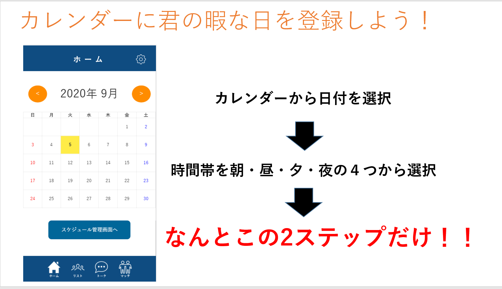

＃当作品のリポジトリでは、他言語での再開発時を考慮し、バックエンドの機能を除いています。
Github
https://github.com/reone19/HACKU2020
担当
マネジメント兼バックエンド
作品について
自分 の登録した友達間でスケジュールをカレンダーで 予め共有しておけば、遊びのお誘する時とかに 相手の予定がわからず気まずさが減ると思いましたので、 スケジュールの管理を通してマッチングを円滑にすると考え、制作に踏み出してみました。
コメント
学外コンテストに参加しようと考えたのは、
チーム開発経験が欲しかったのがきっかけです。
チームで出たアイディアがスケジュールマッチングでした。
Gitをチームで使って開発を経験してみることや、
学外コンテストに参加も経験してみたかったのもあります。結果は残念ながら、コンテスト期間中に完成させることができませんでした。
初のチーム開発でマネジメント面での力不足さや、技術力の足りなさを痛感したので、この時の失敗経験が今後の開発の活動に反省点を生かす場面で影響していきました。